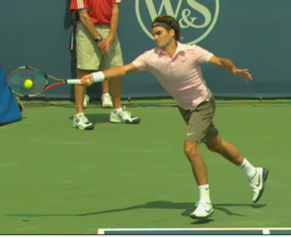
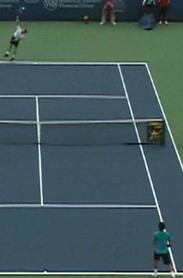
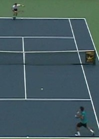
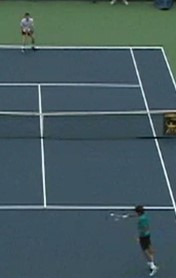

← Bài trước: Return of Serve - Flexibility, Shot Selection, Split Step | 🏠 Classic Lessons Trang chủ | Bài tiếp: → Return of Serve - The Return Swing
Cú trả giao bóng: Ba nguyên tắc đầu tiên
Thư viện kiến thức quần vợt thống nhất — Cơ bản, Phân tích kỹ thuật, Thư viện tham khảo và nhiều hơn nữa
Cú trả giao bóng: Ba nguyên tắc đầu tiên
Bill Tym
40% hiệu quả của bạn đến từ cú trả giao bóng.
Kiểm soát kỹ thuật của cú trả giao bóng là yếu tố quan trọng để đạt được tiềm năng quần vợt của bạn. Nó có quan trọng đến mức nào?
Tôi đã lâu nay cho rằng, trực tiếp hoặc gián tiếp, 40% hiệu quả của bạn có thể được quy cho cú giao bóng và 40% còn lại cho cú trả giao bóng. Lưu ý rằng tôi nói "trực tiếp hoặc gián tiếp".
Các cú giao bóng thắng (ace) và các cú giao bóng không trả được không phải là yếu tố duy nhất góp phần vào tỷ lệ 40% cho cú giao bóng. Điều quan trọng hơn là những gì một cú giao bóng hiệu quả thiết lập.
Ví dụ, hãy xem xét mẫu "cú giao bóng cộng một" phổ biến, nơi người giao bóng đánh một cú giao bóng mạnh nhưng được trả yếu, sau đó người giao bóng bước vào và đánh một cú thuận tay thắng. Thống kê trận đấu cho thấy cú thuận tay đã thắng điểm, nhưng thực tế, cú giao bóng đã đóng vai trò quan trọng trong kết quả của điểm đó.
Tương tự, nếu người trả giao bóng hiệu quả hóa giải một cú giao bóng tốt, hoặc thậm chí tốt hơn giành được vị trí tấn công với cú trả giao bóng, và sau đó giành chiến thắng điểm, thì cú trả giao bóng hiệu quả đã đóng vai trò quan trọng trong kết quả của điểm đó.
Giả sử tỷ lệ 80% là gần đúng, logic cho thấy bạn nên dành một phần lớn thời gian luyện tập để kiểm soát kỹ thuật cú giao bóng và trả giao bóng. Không may, nhiều tay vợt không dành đủ thời gian và luyện tập có phương pháp cho hai cú đánh này, đặc biệt là cú trả giao bóng.
Mục đích của loạt bài viết đầu tiên này là làm nổi bật các khía cạnh kỹ thuật, chiến thuật và tâm lý quan trọng của cú trả giao bóng.
Ba nguyên tắc cơ bản đầu tiên của cú trả giao bóng là gì?
Tính nhất quán và độ chính xác
Bài viết này sẽ đề cập đến ba nguyên tắc cơ bản đầu tiên của cú trả giao bóng. Đây là tính nhất quán và độ chính xác, vị trí của đầu vợt, và quan sát bóng đúng cách. Các bài viết tiếp theo sẽ đề cập đến các nguyên tắc cơ bản khác, sau đó chuyển sang các biến thể kỹ thuật như cú trả giao bóng lung tung, sau đó là chiến lược trả giao bóng và cuối cùng là cách luyện tập hiệu quả cú trả giao bóng.
Khi đưa ra các bài thuyết trình trong lớp học, tôi thường viết các chữ cái A, P, M và C lên bảng. Tôi sau đó yêu cầu lớp học đặt các chữ cái này theo bất kỳ thứ tự nào tạo thành một từ tiếng Anh. Chỉ có một thứ tự đúng: C – A – M - P.
Tôi sau đó đánh dấu trên bảng rằng C đại diện cho Tính nhất quán, A đại diện cho Độ chính xác, M đại diện cho Khả năng di chuyển và P đại diện cho Sức mạnh. Theo quan điểm của tôi, bạn nên học trò chơi theo thứ tự đó.
Giới thiệu sức mạnh quá sớm trong quá trình phát triển thường dẫn đến việc các tay vợt có trò chơi không hoàn chỉnh. Hơn nữa, khi trả một cú giao bóng lớn, bạn thậm chí không muốn giới thiệu yếu tố sức mạnh.
Cú giao bóng đã cung cấp sức mạnh. Mục tiêu của bạn là ổn định tình hình để cho phép bạn đánh một cú trả giao bóng hiệu quả. Mục tiêu là đánh các cú trả giao bóng nhất quán và chính xác đến các mục tiêu của bạn và có thể làm được điều đó trong khi di chuyển để chặn cú giao bóng; nói cách khác là C, A và M trong "CAMP". Đừng lo lắng về P trong cú trả giao bóng.
Yếu tố quan trọng nhất
Nhiều yếu tố có thể góp phần vào một cú đánh thành công, dù là cú trả giao bóng hay cú đánh khác, chẳng hạn như chuẩn bị tốt và cân bằng. Nhưng yếu tố quan trọng nhất là vị trí chính xác của đầu vợt tại thời điểm tiếp xúc với bóng so với đường đi của quả bóng đến.

Như được thể hiện bởi Roger Federer, các tay vợt chuyên nghiệp là những người thầy về việc đặt đầu vợt vào vị trí đúng tại thời điểm tiếp xúc ngay cả khi cả hai chân đều ở trên không và lung tung trên cú trả giao bóng.
Đây là nguyên tắc cơ bản đầu tiên. Nếu một tay vợt có mặt vợt ở vị trí đúng tại thời điểm tiếp xúc với dây vợt và chỉ vào mục tiêu, thì có khả năng rất cao rằng cú đánh sẽ đi đến mục tiêu đó.
Chúng ta đã thấy rất nhiều tay vợt mới đánh hỏng hầu hết các quả bóng nhưng sau đó lại đánh một cú đánh tốt. Cú đánh kỳ diệu không phải là do tay vợt mới biến đổi kỹ thuật của mình trên một cú đánh đó. Thay vào đó, nguyên nhân là tay vợt mới may mắn đưa đầu vợt đến vị trí đúng tại thời điểm tiếp xúc.
Các tay vợt chuyên nghiệp là những người thầy về việc đưa đầu vợt đến vị trí đúng tại thời điểm tiếp xúc ngay cả khi đang nhảy, rơi khỏi cân bằng hoặc ở trong tình trạng bị tổn thương. Luôn nhớ yếu tố quan trọng nhất này và tập trung vào mặt vợt và vị trí của nó tại thời điểm tiếp xúc.
Trong một bài viết tiếp theo trong loạt bài này, tôi sẽ giải thích chi tiết mối quan hệ giữa vị trí của đầu vợt và mục tiêu chính của bạn - điểm phía trên lưới và mục tiêu phụ - điểm trên sân của đối thủ.
Quan sát bóng đúng cách
Tôi dạy học viên của mình một quy trình tâm lý để thực hiện sau bất kỳ điểm nào mà họ mắc lỗi. Quy trình bao gồm đặt các câu hỏi cho bản thân. Câu hỏi đầu tiên là "Tôi đã tiếp xúc vững chắc với bóng chưa?"
Nếu câu trả lời là không, câu hỏi theo sau đầu tiên là "Tôi đã quan sát bóng đúng cách chưa? Quan sát bóng là nguyên tắc thứ hai.
Để quan sát bóng thành công trong bối cảnh trả giao bóng, hãy tập trung vào thời điểm vợt của đối thủ tiếp xúc với giao bóng. Điều này kết hợp với một bước chia tốt cho phép bạn phản ứng đúng với giao bóng.
Bây giờ hãy tập trung vào thời điểm giao bóng nảy trong khu vực giao bóng của bạn. Điều này giúp bạn theo dõi bóng vào vợt của bạn.
Thời điểm tiếp theo là khi mặt vợt của bạn tiếp xúc với cú trả giao bóng. Điều này kết hợp với việc giữ đầu của bạn yên tại thời điểm tiếp xúc là yếu tố quan trọng nhất để đảm bảo tiếp xúc vững chắc. Ba tay vợt vĩ đại nhất trong lịch sử quần vợt, Federer, Bjorn Borg và Chris Evert, đều là những người thầy về việc quan sát bóng và giữ đầu yên tại thời điểm tiếp xúc.



Roger Federer minh họa ba thời điểm quan trọng để tập trung vào bóng: (1) khi người giao bóng tiếp xúc, (2) thời điểm bóng nảy trong khu vực giao bóng của bạn và (3) thời điểm tiếp xúc trên cú trả giao bóng của bạn.
Bắt đầu quá trình
Một thành phần quan trọng khác của việc quan sát bóng là khi bạn nên bắt đầu quá trình đó. Chờ đến khi bóng rời khỏi bàn tay ném của người giao bóng là quá muộn. Bạn nên bắt đầu quan sát bóng khi người giao bóng đang ném bóng và tiếp tục quan sát bóng khi bàn tay ném lên để phóng bóng và liên tục quan sát bóng cho phần còn lại của cú trả giao bóng.
Một trong những lý do tôi ủng hộ việc quan sát bóng từ lúc người giao bóng bắt đầu ném bóng là nó giúp bạn tinh thần đồng điệu với nhịp điệu của người giao bóng. Ngoài ra, một số tay vợt sẽ ném bóng một số lần không nhất quán và trừ khi bạn được hấp thụ trong quá trình ở giai đoạn đó, bạn có thể không sẵn sàng khi họ bắt đầu chuyển động giao bóng thực sự của mình.
Khi bạn tiến bộ, ngoài việc trở nên tốt hơn trong việc quan sát bóng, bạn sẽ bắt đầu nhận thấy các gợi ý sớm hơn về nơi người giao bóng sẽ đánh giao bóng. Điều này bao gồm cả vị trí ném bóng (mặc dù một số tay vợt hàng đầu có thể đánh nhiều giao bóng từ cùng một vị trí ném) cũng như các yếu tố như thời gian sớm nào vai của người giao bóng mở ra để đánh.
Hãy theo dõi các nguyên tắc quan trọng khác!

Bill Tym, một Chuyên gia Huấn luyện viên Quần vợt Mỹ (USPTA Master Professional) và cựu Chủ tịch Quốc gia USPTA, đã tham gia vào quần vợt trong hơn nửa thế kỷ với tư cách là huấn luyện viên, tay vợt và quản trị viên. Ông đã huấn luyện đội tuyển quần vợt nam Đại học Vanderbilt giành được vị trí đầu tiên tại giải đấu NCAA. Với tư cách là tay vợt, Tym đã giành được danh hiệu vô địch đơn nam của Liên đoàn Đại học Nam (SEC) tại Đại học Florida. Ông cũng thi đấu trên tour quốc tế và giành được 10 danh hiệu quốc gia và quốc tế.
Với tư cách là Giám đốc điều hành USPTA, Tym đã giúp tạo ra một bài kiểm tra chứng nhận tiêu chuẩn. Tym đã được trao danh hiệu Huấn luyện viên Quần vợt của Năm (USPTA Professional of the Year) vào năm 1982, Huấn luyện viên Đại học của Năm (College Coach of the Year) vào năm 1989, và Huấn luyện viên Touring của Năm (Touring Coach of the Year) vào năm 1997 và 2002. Ông cũng đã nhận được Giải thưởng Thành tựu trọn đời George Bacso từ USPTA vào năm 2001 và Giải thưởng Đóng góp Đặc biệt trong Giáo dục Quần vợt từ Đại sảnh Danh vọng Quần vợt Quốc tế vào năm 1981.
Bill muốn ghi nhận sự giúp đỡ của nhà đầu tư sáng lập Tennisplayer Ed Weiss trong việc chuẩn bị bài viết này.
Nguồn: tennisplayer.net lưu trữ — Return of Serve - The First 3 Principles.docx (Thư viện giảng dạy của John Yandell, 2002-2022). Đã được trích xuất và hiển thị dưới dạng HTML cho Tennis Future Lab.